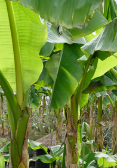

Banana grove – Musabasjoo |
 |
In the UK bananas are imported as a ‘luxury’ crop from the Caribbean or from Central America, but in Africa they are a staple food source with over 80% being consumed where they are grown. ‘Musa’ is a clump-forming herb which has thick, succulent, tall main stems (pseudostems). They produce amazing architectural flowers, while the banana hangs down from the top of the trunk. Although Musabasjoo will not flower or fruit outdoors in the UK, its lush foliage is a sight in itself. Each of its leaves can grow up to 1 metre long. The Museum holds many objects made from banana fibre. In case 3 of the African Galleries, opposite artist Sokari Douglas Camp’s masquerade film, visitors can see a Gelede (Mother spirit) mask with bananas sprouting from the head. |